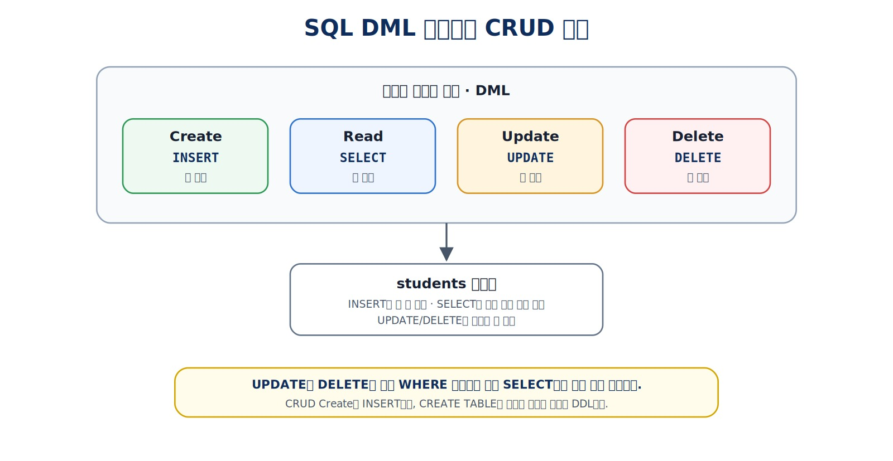
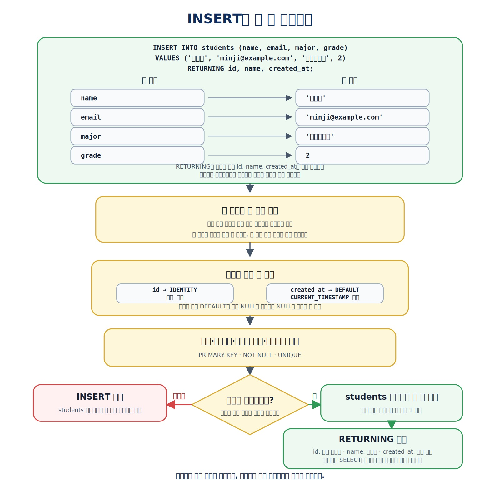
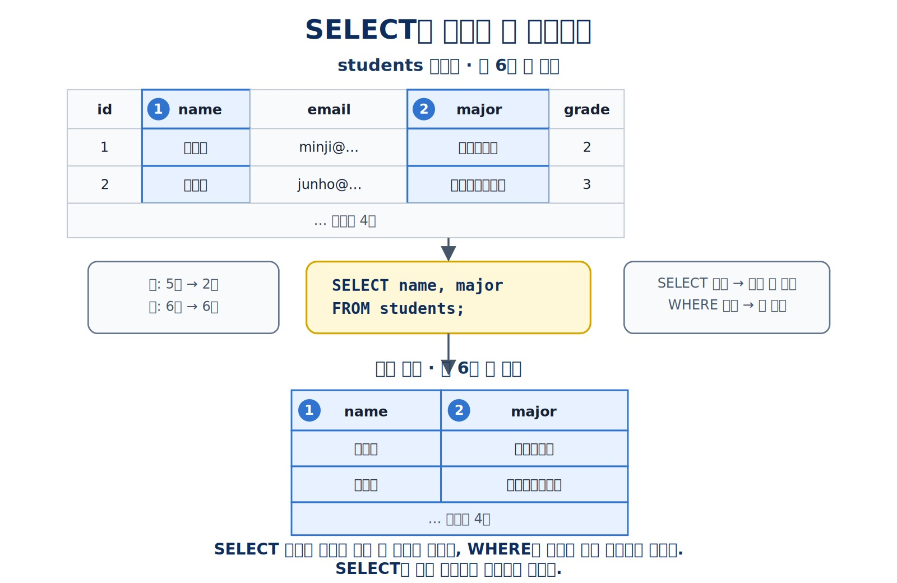
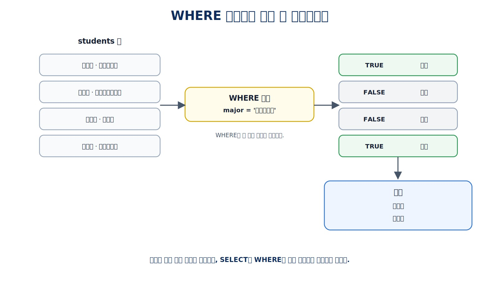
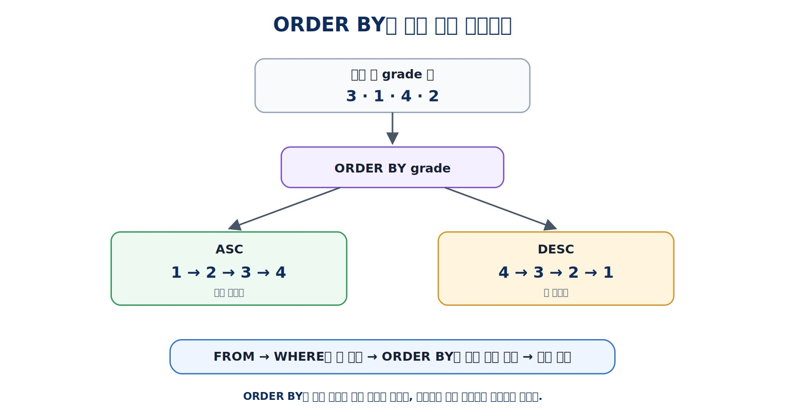
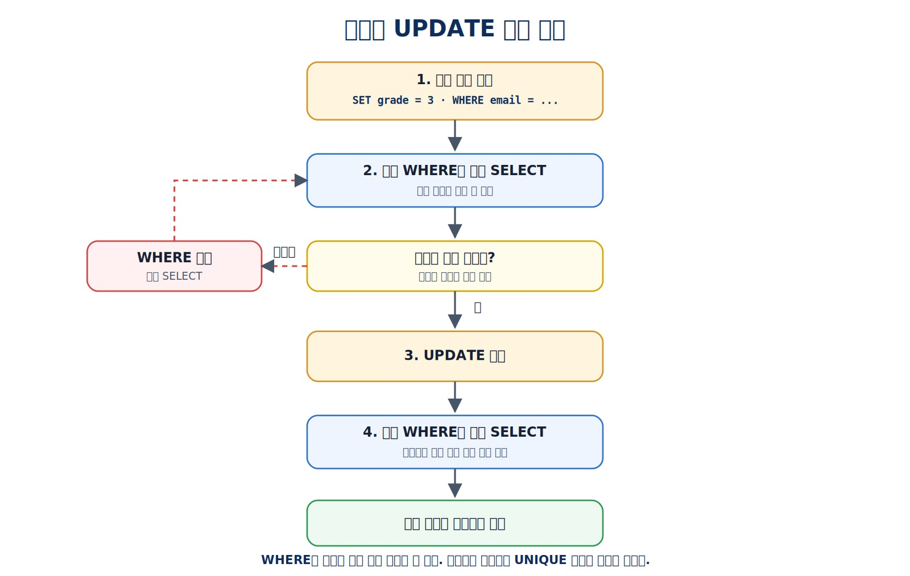
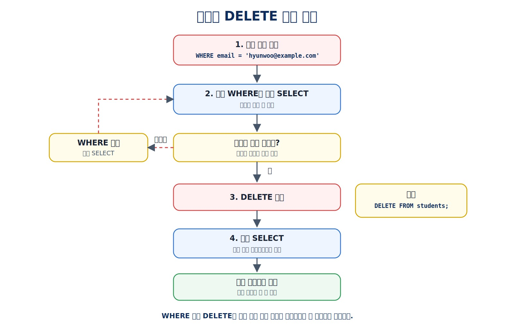
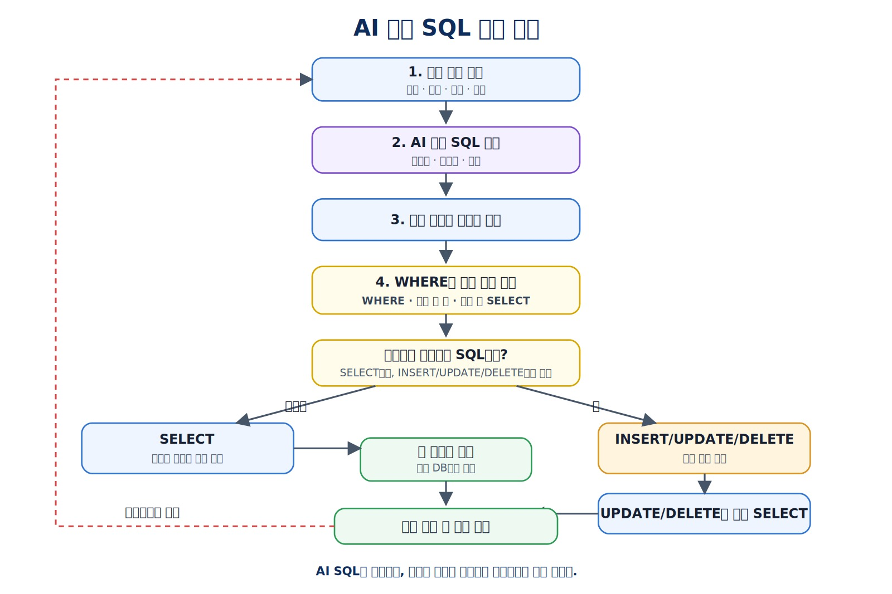

관계형 데이터베이스와 SQL 시작하기
이번 장에서는 처음으로 테이블을 만들고 데이터를 입력·조회·수정·삭제하면서 SQL의 기본 흐름을 직접 실행하고 검증합니다. 문법 암기보다 실행 전 예상과 실행 후 결과를 비교하는 습관에 집중합니다.
어떤 행이 바뀌는지 실행 전에 예측하고 실행 후 어떻게 검증할까?
이 장을 시작하기 전에
이 장은 SQL을 처음 실행하는 독자를 대상으로 합니다. Chapter 03에서 PostgreSQL 서버와 DBeaver 연결을 준비했다면 별도의 SQL 경험은 필요하지 않습니다.
실습을 시작하기 전에 다음 상태를 확인합니다.
PostgreSQL 서버가 실행 중이다.
DBeaver에서 ai_database_book에 연결했다.
현재 연결과 실행 범위를 확인할 수 있다.
Chapter 04 실습 SQL 파일을 열 수 있다.
실습 파일과 실행 순서는 Chapter 04 실습 코드 안내에서 확인할 수 있습니다.
이번 장에서는 처음으로 테이블과 데이터를 직접 변경합니다. 따라서 SQL 문법을 많이 외우는 것보다 다음 순환을 반복하는 습관이 중요합니다.
SQL 읽기
→ 예상 결과 작성
→ 현재 연결과 실행 범위 확인
→ 실행
→ 반환 행 또는 영향받은 행 수 확인
→ 실제 데이터와 비교
이 장을 마치면
다음 작업을 수행할 수 있습니다.
public.students테이블을 생성한다.- 한 행과 여러 행을 입력한다.
- 필요한 열과 조건에 맞는 행을 조회한다.
AND,OR,IN과 문자열 패턴을 사용한다.NULL값을 올바르게 확인한다.- 중복을 제거하고 결과를 정렬하며 개수를 제한한다.
- 대상 행을 먼저 확인한 뒤 데이터를 수정하거나 삭제한다.
- SQL 실행 전 예상과 실행 후 결과를 비교한다.
학습 표시
- 핵심 학습: 처음 SQL을 배우는 독자가 직접 실행할 내용
- 선택 학습: PostgreSQL의 편리한 기능과 추가 문법
- 심화 학습: 데이터 타입과 내부 동작을 더 정확하게 이해할 내용
1. 첫 번째 테이블과 SQL 실습 흐름
이번 장에서는 students 테이블 하나를 사용합니다.
테이블: public.students
한 행: 학생 한 명
열: id, name, email, major, grade, created_at
기본키: id
테이블을 만든 뒤 네 가지 기본 작업을 수행합니다.
| CRUD | SQL | 역할 | 기능 예시 |
|---|---|---|---|
| Create | INSERT |
새 데이터 행 추가 | 학생 등록 |
| Read | SELECT |
저장된 데이터 조회 | 학생 목록 확인 |
| Update | UPDATE |
기존 데이터 수정 | 학생 정보 변경 |
| Delete | DELETE |
기존 데이터 삭제 | 학생 기록 삭제 |

그림 4-1 SQL 명령어와 CRUD 대응
CRUD의 Create는 새 데이터 행을 추가하는 작업이므로 INSERT에 해당합니다. CREATE TABLE은 데이터를 추가하는 명령이 아니라 데이터를 저장할 구조를 만드는 명령입니다.
이 장의 권장 실행 파일 순서는 다음과 같습니다.
01_create_students.sql
→ 02_insert_students.sql
→ 03_select_students.sql
→ 04_update_delete_students.sql
현재 상태를 확인할 때는 verify_students.sql, 처음부터 다시 시작할 때는 reset_students.sql을 사용합니다.
2. 실습 위치와 실행 범위 확인하기
먼저 현재 연결을 확인합니다.
SELECT current_database();
SELECT current_user;
SELECT current_schema();
SHOW search_path;
확인할 핵심은 다음과 같습니다.
현재 데이터베이스가 ai_database_book인가?
예상한 사용자로 접속했는가?
search_path를 확인했는가?
현재 스키마는 환경에 따라 public이 아닐 수 있습니다. 이 장에서는 대상을 분명히 하기 위해 모든 주요 테이블 이름을 public.students처럼 스키마와 함께 작성합니다. 권장 로컬 경로에서는 Chapter 03의 setup_validate_local.sql로 public 스키마의 USAGE와 CREATE 권한까지 확인합니다. transaction_read_only = off라는 사실만으로 실제 객체 생성 권한까지 보장되는 것은 아닙니다.
DBeaver에서 실행하기 전에는 다음 세 가지를 확인합니다.
1. 어느 데이터베이스에 연결되어 있는가?
2. 어떤 SQL 문장 또는 영역을 선택했는가?
3. Auto-commit 상태는 무엇인가?
자동 커밋 상태에서는 INSERT, UPDATE, DELETE가 실행 직후 확정될 수 있습니다. Chapter 09에서 트랜잭션을 배우기 전까지는 변경 SQL을 한 문장 또는 확인한 선택 영역 단위로 실행합니다.
3. SQL의 기본 작성 규칙
이 책에서는 다음 작성 방식을 사용합니다.
SQL 키워드: 대문자
테이블명·열 이름: 소문자 snake_case
문자열 값: 작은따옴표
숫자: 따옴표 없이 작성
문장 끝: 세미콜론
한 줄 주석: --
예를 들어 문자열과 숫자는 다음처럼 작성합니다.
SELECT *
FROM public.students
WHERE major = '컴퓨터공학'
AND grade = 2;
작은따옴표와 큰따옴표는 역할이 다릅니다.
'김민지'
→ 문자열 값
"name"
→ 따옴표가 필요한 식별자
초급 실습에서는 큰따옴표가 필요한 테이블명과 열 이름을 만들지 않습니다.
SQL 키워드는 대소문자를 구분하지 않지만, 키워드와 데이터 이름을 시각적으로 구분하기 위해 책에서는 키워드를 대문자로 작성합니다.
4. CREATE TABLE로 첫 테이블 만들기
다음 SQL로 public.students를 만듭니다.
CREATE TABLE public.students (
id INTEGER GENERATED BY DEFAULT AS IDENTITY PRIMARY KEY,
name VARCHAR(50) NOT NULL,
email VARCHAR(100) UNIQUE NOT NULL,
major VARCHAR(100),
grade INTEGER,
created_at TIMESTAMPTZ NOT NULL DEFAULT CURRENT_TIMESTAMP
);
| 구성 | 의미 |
|---|---|
CREATE TABLE |
새 테이블 구조 생성 |
public.students |
public 스키마의 students 테이블 |
INTEGER |
정수 데이터 타입 |
VARCHAR(50) |
최대 길이를 지정한 문자열 타입 |
PRIMARY KEY |
각 행을 고유하게 구분 |
NOT NULL |
최종 저장값으로 NULL을 허용하지 않음 |
UNIQUE |
같은 비-NULL 값의 중복을 제한 |
DEFAULT |
열 값을 생략했을 때 사용할 기본값 |
IDENTITY |
값을 생략하면 자동 번호 생성 |
TIMESTAMPTZ |
절대 시점을 저장하고 세션 TimeZone에 맞춰 표시하는 날짜·시각 타입 |
테이블을 만든 뒤 DBeaver의 탐색기에서 다음 위치를 새로고침합니다.
Schemas
→ public
→ Tables
→ students
같은 CREATE TABLE을 다시 실행하면 이미 테이블이 존재한다는 오류가 발생할 수 있습니다. 오류를 피하기 위해 바로 삭제하지 말고 먼저 기존 구조와 데이터를 확인합니다.
CREATE TABLE IF NOT EXISTS는 같은 이름의 테이블이 있을 때 오류를 피하지만, 기존 테이블의 열과 제약조건이 원하는 구조인지 보장하지는 않습니다.
5. 열, 데이터 타입과 제약조건 읽기
students 테이블의 한 행은 학생 한 명을 나타냅니다.
| 열 | 타입 | 필수 여부 | 역할 |
|---|---|---|---|
id |
INTEGER |
자동 생성·필수 | 내부 식별자 |
name |
VARCHAR(50) |
필수 | 학생 이름 |
email |
VARCHAR(100) |
필수·중복 금지 | 학생 이메일 |
major |
VARCHAR(100) |
선택 | 전공 |
grade |
INTEGER |
선택 | 학년 |
created_at |
TIMESTAMPTZ |
기본값·필수 | 등록 시각 |
major와 grade에는 NOT NULL이 없으므로 값을 생략하면 NULL이 저장될 수 있습니다. NOT NULL은 INSERT 문에서 해당 열 이름을 반드시 적어야 한다는 뜻이 아니라, 최종적으로 저장되는 값이 NULL일 수 없다는 뜻입니다. 예를 들어 created_at은 NOT NULL이지만 DEFAULT CURRENT_TIMESTAMP가 있으므로 INSERT에서 열을 생략할 수 있습니다.
자주 사용하는 데이터 타입
| 종류 | PostgreSQL 예 | 사용 예 |
|---|---|---|
| 정수 | INTEGER, BIGINT |
수량, 내부 ID |
| 정확한 소수 | NUMERIC |
금액, 정밀한 비율 |
| 문자열 | VARCHAR, TEXT |
이름, 이메일, 코드 |
| 논리값 | BOOLEAN |
활성 여부 |
| 날짜 | DATE |
생년월일, 기준일 |
| 날짜와 시각 | TIMESTAMPTZ |
등록 시각 |
금액처럼 정확성이 중요한 값은 부동소수점 타입보다 NUMERIC을 우선 검토합니다. 정밀도와 업무 규칙은 Chapter 06에서 확장합니다.
선택 학습: 형 변환
문자열을 정수로 바꾸는 예입니다.
SELECT CAST('3' AS INTEGER) AS grade_number;
SELECT '3'::INTEGER AS grade_number;
CAST()는 표준적인 표현이고 ::는 PostgreSQL에서 자주 사용하는 축약 문법입니다. 데이터 타입이 다른 값을 비교하거나 계산할 때 자동 변환에만 의존하지 말고 의도를 확인합니다.
선택 학습: UUID와 JSONB
PostgreSQL은 UUID, JSONB 같은 타입도 제공합니다. 이번 장에서는 직접 사용하지 않으며 유연한 데이터와 확장 기능은 Chapter 12에서 살펴봅니다.
심화 학습: 자동값의 의미
자동 생성 id는 행을 구분하는 값입니다. 학생 수나 학번처럼 빈틈없는 업무 번호가 아닙니다. 실패한 입력이나 삭제 등으로 번호 사이에 빈 구간이 생길 수 있습니다.
TIMESTAMPTZ는 시간대가 포함된 입력을 하나의 절대 시점으로 변환해 저장하고, 조회할 때는 현재 세션의 TimeZone에 맞춰 표시합니다. 입력할 때 사용한 원래 시간대 이름 자체를 보존하는 타입은 아닙니다.
created_at을 생략하면 CURRENT_TIMESTAMP가 기본값으로 사용됩니다. PostgreSQL의 CURRENT_TIMESTAMP는 현재 트랜잭션의 시작 시각을 사용하므로 같은 트랜잭션에서 입력한 여러 행은 같은 값을 가질 수 있습니다. 이 장의 02_insert_students.sql도 여섯 학생을 하나의 명시적 트랜잭션으로 입력하므로 created_at이 모두 같을 수 있습니다. 이때 id는 결과 순서를 안정적으로 만드는 동률 해소 기준으로 사용할 뿐, 실제 생성 시각을 대신하는 업무 시간으로 해석하지 않습니다.
이 테이블은 기본 SQL 학습용 최소 구조입니다. 학년 범위, 전공 표준화, 이메일 대소문자와 탈퇴 정책은 Chapter 06에서 보완합니다.
6. INSERT로 데이터 입력하기
INSERT는 새 행을 추가합니다.
INSERT INTO public.students (name, email, major, grade)
VALUES ('김민지', 'minji@example.com', '컴퓨터공학', 2);
문자열은 작은따옴표로 감싸고 숫자는 따옴표 없이 입력합니다. id와 created_at은 생략했으므로 PostgreSQL이 값을 결정합니다.
선택 학습: RETURNING
PostgreSQL의 RETURNING을 사용하면 실제로 입력된 값을 바로 확인할 수 있습니다.
INSERT INTO public.students (name, email, major, grade)
VALUES ('김민지', 'minji@example.com', '컴퓨터공학', 2)
RETURNING id, name, created_at;

그림 4-2 INSERT로 새 행 추가하기
여러 행도 한 문장으로 입력할 수 있습니다.
INSERT INTO public.students (name, email, major, grade)
VALUES
('이준호', 'junho@example.com', '데이터사이언스', 3),
('박서연', 'seoyeon@example.com', '경영학', 1),
('최현우', 'hyunwoo@example.com', '컴퓨터공학', 4),
('정하늘', 'haneul@example.com', 'AI데이터공학', 2);
전공과 학년을 모르는 학생은 해당 열을 생략할 수 있습니다.
INSERT INTO public.students (name, email)
VALUES ('윤서진', 'seojin@example.com');
입력 완료 후의 초기 데이터 상태는 다음과 같습니다.
| 항목 | 상태 |
|---|---|
| 학생 수 | 6명 |
| 이준호 학년 | 3 |
| 박서연 | 존재 |
| 컴퓨터공학 학생 | 김민지, 최현우 |
major, grade가 NULL인 학생 |
윤서진 |
행 수는 다음처럼 확인할 수 있습니다.
SELECT COUNT(*) AS student_count
FROM public.students;
COUNT(*)와 집계 함수는 Chapter 08에서 자세히 다룹니다.
7. SELECT로 필요한 데이터 조회하기
모든 열을 조회합니다.
SELECT *
FROM public.students;
*는 모든 열을 뜻합니다. 필요한 열만 명시하면 결과의 의미가 더 분명합니다.
SELECT id, name, email, major
FROM public.students
ORDER BY id ASC;

그림 4-3 SELECT로 필요한 열 선택하기
조회 결과의 열 이름만 바꾸어 표시하려면 별칭을 사용할 수 있습니다.
SELECT
name AS student_name,
major AS student_major
FROM public.students
ORDER BY id ASC;
AS는 원본 테이블의 열 이름을 변경하지 않습니다.
조회 결과를 확인할 때는 다음을 살펴봅니다.
어떤 열이 반환되었는가?
몇 행이 반환되었는가?
결과 순서가 필요한가?
예상한 값과 실제 값이 일치하는가?
ORDER BY가 없는 조회 결과의 순서는 보장되지 않습니다.
8. WHERE와 비교 연산자
WHERE는 조건에 맞는 행만 선택합니다.
SELECT *
FROM public.students
WHERE major = '컴퓨터공학'
ORDER BY id ASC;

그림 4-4 WHERE 조건으로 대상 행 필터링하기
| 연산자 | 의미 | 예시 |
|---|---|---|
= |
같다 | grade = 2 |
<> |
같지 않다 | major <> '경영학' |
> |
크다 | grade > 2 |
>= |
크거나 같다 | grade >= 3 |
< |
작다 | grade < 3 |
<= |
작거나 같다 | grade <= 2 |
학년이 3 이상인 학생을 조회합니다.
SELECT id, name, grade
FROM public.students
WHERE grade >= 3
ORDER BY grade DESC, id ASC;
조건 값의 타입도 열의 의미와 맞아야 합니다.
grade = 3
→ 정수 비교
major = '컴퓨터공학'
→ 문자열 비교
9. AND, OR, IN으로 조건 조합하기
AND는 모든 조건을 만족해야 합니다.
SELECT *
FROM public.students
WHERE major = '컴퓨터공학'
AND grade >= 3
ORDER BY id ASC;
OR는 조건 중 하나 이상을 만족하면 됩니다.
SELECT *
FROM public.students
WHERE major = '컴퓨터공학'
OR major = '데이터사이언스'
ORDER BY id ASC;
같은 열을 여러 값과 비교할 때는 IN이 읽기 쉽습니다.
SELECT *
FROM public.students
WHERE major IN ('컴퓨터공학', '데이터사이언스')
ORDER BY id ASC;
AND와 OR를 함께 사용하면 괄호로 의도를 분명하게 표현합니다.
SELECT *
FROM public.students
WHERE major = '컴퓨터공학'
AND (grade = 2 OR grade = 3)
ORDER BY id ASC;
10. LIKE로 문자열 검색하기
LIKE는 문자열 패턴을 검색합니다.
SELECT *
FROM public.students
WHERE name LIKE '김%'
ORDER BY id ASC;
| 패턴 | 의미 |
|---|---|
'김%' |
김으로 시작 |
'%민%' |
중간에 민 포함 |
'%우' |
우로 끝남 |
'김__' |
김 뒤에 정확히 두 문자 |
%는 0개 이상의 문자를, _는 정확히 한 문자를 나타냅니다.
선택 학습: ILIKE
PostgreSQL에서는 대소문자를 구분하지 않는 패턴 검색에 ILIKE를 사용할 수 있습니다.
SELECT *
FROM public.students
WHERE email ILIKE '%EXAMPLE.COM'
ORDER BY id ASC;
ILIKE는 PostgreSQL 문법이며 다른 DBMS에서는 지원 방식이 다를 수 있습니다.
11. NULL 값 확인하기
NULL은 0이나 빈 문자열이 아닙니다.
NULL
→ 값이 없거나 아직 알려지지 않은 상태
윤서진 학생의 major와 grade는 NULL입니다.
다음 조건은 원하는 결과를 반환하지 않습니다.
SELECT *
FROM public.students
WHERE major = NULL;
NULL은 일반 값처럼 = 또는 <>로 비교하지 않습니다. IS NULL과 IS NOT NULL을 사용합니다.
SELECT *
FROM public.students
WHERE major IS NULL
ORDER BY id ASC;
SELECT *
FROM public.students
WHERE major IS NOT NULL
ORDER BY id ASC;
major <> '경영학'은 major가 NULL인 행을 포함하지 않습니다. NULL도 포함하려면 의도를 명시합니다.
SELECT *
FROM public.students
WHERE major <> '경영학'
OR major IS NULL
ORDER BY id ASC;
심화 학습: UNKNOWN과 IS DISTINCT FROM
일반 값과 NULL을 비교하면 결과가 참이나 거짓이 아니라 UNKNOWN이 될 수 있습니다. WHERE는 참인 행만 남기므로 해당 행이 제외됩니다.
PostgreSQL에서는 NULL을 포함한 비교에 다음 문법도 사용할 수 있습니다.
WHERE major IS DISTINCT FROM '경영학'
12. DISTINCT, ORDER BY와 LIMIT
중복 값 제거
전공 목록을 중복 없이 조회합니다.
SELECT DISTINCT major
FROM public.students
WHERE major IS NOT NULL
ORDER BY major ASC;
DISTINCT는 조회 결과의 중복을 제거합니다. 원본 테이블의 데이터를 삭제하거나 수정하지 않습니다.
결과 정렬
SELECT *
FROM public.students
ORDER BY grade ASC, id ASC;

그림 4-5 ORDER BY로 조회 결과 정렬하기
선택 학습: NULL 위치 지정
PostgreSQL에서는 NULLS FIRST와 NULLS LAST로 NULL 위치를 지정할 수 있습니다.
SELECT *
FROM public.students
ORDER BY grade DESC NULLS LAST, id ASC;
결과 개수 제한
SELECT *
FROM public.students
ORDER BY created_at DESC, id DESC
LIMIT 3;
ORDER BY
→ 결과 순서를 정함
LIMIT
→ 정렬된 결과 중 가져올 행 수를 정함
LIMIT을 사용할 때는 먼저 정렬 기준을 명시합니다. 위 예제는 created_at이 큰 행부터 정렬하고, 같은 시각이면 id로 순서를 고정한 뒤 상위 3행을 가져옵니다. id는 여기서 동률 해소용일 뿐 실제 시간의 대체값은 아닙니다.
13. UPDATE를 안전하게 실행하기
이준호의 학년을 4로 수정합니다.
1단계: 대상 확인
SELECT *
FROM public.students
WHERE email = 'junho@example.com';
2단계: 수정과 결과 확인
UPDATE public.students
SET grade = 4
WHERE email = 'junho@example.com'
RETURNING id, name, grade;
예상 영향 행 수는 1행입니다.
3단계: 다시 조회
SELECT *
FROM public.students
WHERE email = 'junho@example.com';

그림 4-6 안전한 UPDATE 실행 절차
SELECT로 대상 확인
→ UPDATE 실행
→ RETURNING과 영향받은 행 수 확인
→ SELECT로 결과 재확인
WHERE가 없는 다음 SQL은 모든 행을 변경합니다.
UPDATE public.students
SET grade = 1;
문법 오류는 아니지만 의도하지 않은 전체 변경이 될 수 있습니다.
선택 학습: 여러 열 수정
UPDATE public.students
SET major = '소프트웨어공학',
grade = 3
WHERE email = 'minji@example.com'
RETURNING id, name, major, grade;
이 예제는 데이터 상태를 바꾸므로 기본 실습에서는 실행하지 않고 구조만 확인합니다.
수정 실습 후 상태는 학생 6명, 이준호 학년 4, 박서연 존재입니다.
14. DELETE를 안전하게 실행하기
박서연 학생을 삭제합니다.
1단계: 대상 확인
SELECT *
FROM public.students
WHERE email = 'seoyeon@example.com';
2단계: 삭제와 결과 확인
DELETE FROM public.students
WHERE email = 'seoyeon@example.com'
RETURNING id, name, email;
예상 영향 행 수는 1행입니다.
3단계: 다시 조회
SELECT *
FROM public.students
WHERE email = 'seoyeon@example.com';

그림 4-7 안전한 DELETE 실행 절차
SELECT로 대상 확인
→ DELETE 실행
→ RETURNING과 영향받은 행 수 확인
→ SELECT로 결과 재확인
WHERE가 없는 다음 SQL은 테이블의 모든 행을 삭제합니다.
DELETE FROM public.students;
테이블 구조는 남지만 데이터는 모두 사라집니다.
삭제 실습 후 상태는 학생 5명, 이준호 학년 4, 박서연 삭제입니다.
이 장에서는 SQL DELETE의 동작을 배우기 위해 행을 실제로 삭제합니다. 실제 서비스의 “삭제” 기능은 보존 정책과 감사 요구사항에 따라 상태값을 바꾸는 UPDATE 등으로 구현할 수도 있습니다. 어떤 삭제 정책을 사용할지는 업무 규칙과 함께 별도로 결정해야 합니다.
15. AI가 만든 SQL 검토하기
AI가 다음 SQL을 제안했다고 가정하겠습니다.
DELETE FROM public.students
WHERE major = '컴퓨터공학';
문법이 맞더라도 바로 실행하지 않습니다. 먼저 같은 조건으로 대상을 조회합니다.
SELECT id, name, email, major
FROM public.students
WHERE major = '컴퓨터공학'
ORDER BY id ASC;
삭제 실습 후 상태를 기준으로 김민지와 최현우 두 행이 조회됩니다. 두 학생을 모두 삭제하는 것이 실제 요구사항인지 확인해야 합니다. 이 장에서는 해당 DELETE를 실행하지 않습니다.

그림 4-8 AI 생성 SQL 검토 흐름
다음 여섯 질문으로 검토합니다.
1. 현재 연결과 테이블이 맞는가?
2. 사용하는 열과 데이터 타입이 맞는가?
3. WHERE 조건과 NULL 처리가 요구사항과 맞는가?
4. 예상 반환 행 또는 영향받는 행 수는 몇 개인가?
5. UPDATE·DELETE 전에 같은 조건으로 SELECT했는가?
6. 실행 결과가 예상과 일치하는가?
조회 SQL이라면 ORDER BY와 LIMIT이 필요한지도 확인합니다.
16. 자주 하는 실수와 스스로 확인하기
자주 하는 실수
현재 연결을 확인하지 않는다.
SQL 파일 전체를 반복 실행한다.
문자열에 작은따옴표를 사용하지 않는다.
NULL을 = NULL로 비교한다.
AND와 OR의 범위를 괄호로 표현하지 않는다.
ORDER BY 없이 결과 순서를 가정한다.
WHERE 없이 UPDATE나 DELETE를 실행한다.
Auto-commit과 영향받은 행 수를 확인하지 않는다.
자동 생성 id를 학생 수나 학번으로 사용한다.
AI가 만든 SQL을 그대로 실행한다.
개념 확인
- CRUD의 Create와
CREATE TABLE은 어떻게 다른가요? - 문자열과 숫자 값은 SQL에서 어떻게 작성하나요?
NULL은 0이나 빈 문자열과 어떻게 다른가요?WHERE major = NULL이 원하는 결과를 반환하지 않는 이유는 무엇인가요?DISTINCT,ORDER BY,LIMIT의 역할은 각각 무엇인가요?UPDATE와DELETE전에 같은 조건의SELECT를 실행해야 하는 이유는 무엇인가요?
SQL 작성
초기 데이터 상태를 기준으로 작성합니다.
이름과 이메일만 id 순서로 조회하기
컴퓨터공학 또는 데이터사이언스 전공 조회하기
이름이 김으로 시작하는 학생 조회하기
전공이 NULL인 학생 조회하기
전공 목록을 중복 없이 조회하기
`created_at` 기준 상위 3행을 동률까지 안정적인 순서로 조회하기
수정·삭제 실습을 이미 완료했다면 reset_students.sql을 실행한 뒤 01_create_students.sql과 02_insert_students.sql을 순서대로 실행해 초기 상태를 다시 만듭니다.
더 많은 기록 활동과 권장 해설은 Chapter 04 독자 워크북에서 확인합니다.
17. 핵심 정리와 다음 장
| 작업 | SQL | 실행 전 확인 | 실행 후 확인 |
|---|---|---|---|
| 구조 생성 | CREATE TABLE |
현재 DB, 같은 이름의 테이블 | 실제 테이블 구조 |
| 데이터 입력 | INSERT |
열·값·타입, 실행 범위 | 추가된 행과 자동값 |
| 데이터 조회 | SELECT |
열·조건·정렬 | 반환 행, 값과 순서 |
| 데이터 수정 | UPDATE |
같은 조건의 SELECT |
영향 행과 변경값 |
| 데이터 삭제 | DELETE |
같은 조건의 SELECT |
영향 행과 남은 데이터 |
핵심 원칙은 다음과 같습니다.
현재 연결과 실행 범위를 확인한다.
SQL을 실행하기 전에 결과를 예상한다.
NULL은 IS NULL 또는 IS NOT NULL로 확인한다.
결과 순서가 필요하면 ORDER BY를 사용한다.
LIMIT에는 안정적인 정렬 기준을 함께 사용한다.
UPDATE와 DELETE 전에는 같은 조건으로 SELECT한다.
실행 후 반환 행과 영향받은 행 수를 확인한다.
SQL은 실행하는 것보다,
실행 전에 어떤 데이터가 영향을 받고
실행 후 실제 결과가 예상과 일치하는지 확인하는 것이 더 중요하다.
다음 장에서는 학생, 강의와 수강신청처럼 여러 종류의 데이터를 요구사항에서 찾아 테이블과 관계로 표현하고 ERD를 작성합니다.